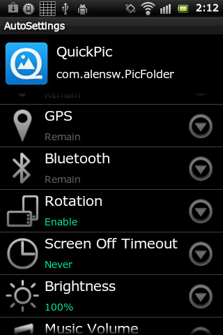
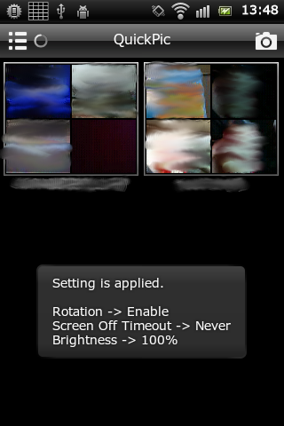

作ったものとか．
Webスクレイピング処理を宣言的に記述するためのRubyライブラリです．
1
2
3
4
5
6
7
8
9
10
11
12
13
14
15
16
|
require 'yasuri'
require 'machinize'
# Node tree constructing by DSL
root = Yasuri.links_root '//*[@id="menu"]/ul/li/a' do
text_title '//*[@id="contents"]/h2'
text_content '//*[@id="contents"]/p[1]'
end
agent = Mechanize.new
root_page = agent.get("http://some.scraping.page.net/")
result = root.inject(agent, root_page)
# => [ {"title" => "PageTitle1", "content" => "Page Contents1" },
# {"title" => "PageTitle2", "content" => "Page Contents2" }, ... ]
|
よくある以下のような処理を、宣言的に、簡単に記述することができます．
- ページ内の複数のリンクを開いて、各ページをスクレイピングした結果をHashで取得する
- ページ内の複数のテキストをスクレイピングし、名前をつけてHashにする
- ページ内に繰り返し出現するテーブルをそれぞれスクレイピングして、配列として取得する
- ページネーションで提供される各ページのうち、上位3つだけを順にスクレイピングする
github.com/tac0x2a/yasuri
beatmaniaIIDX のプレーデータを取得するためのRubyライブラリです．
e-amusementのログインに画像認証が導入されたことにより、現在動作しません．
1
2
3
4
5
6
7
8
9
10
11
12
|
require 'iidx_lib'
konami_id = "konami_id@mail.ad"
password = "your_password"
# for Pendual
IIDX22.open(konami_id, password) do |iidx22|
puts iidx22.dj_data
# => {:dj_name=>"dj auto", ... }
puts iidx22.series_music(20) # ex) tricoro musics.
end
|
-> github.com/tac0x2a/iidx_lib
起動しているアプリやシステムの状態に応じて設定を自動で切り替えるAndroidアプリです．


顔認識ライブラリを利用して，画像中の顔を隠すAndroidアプリです．